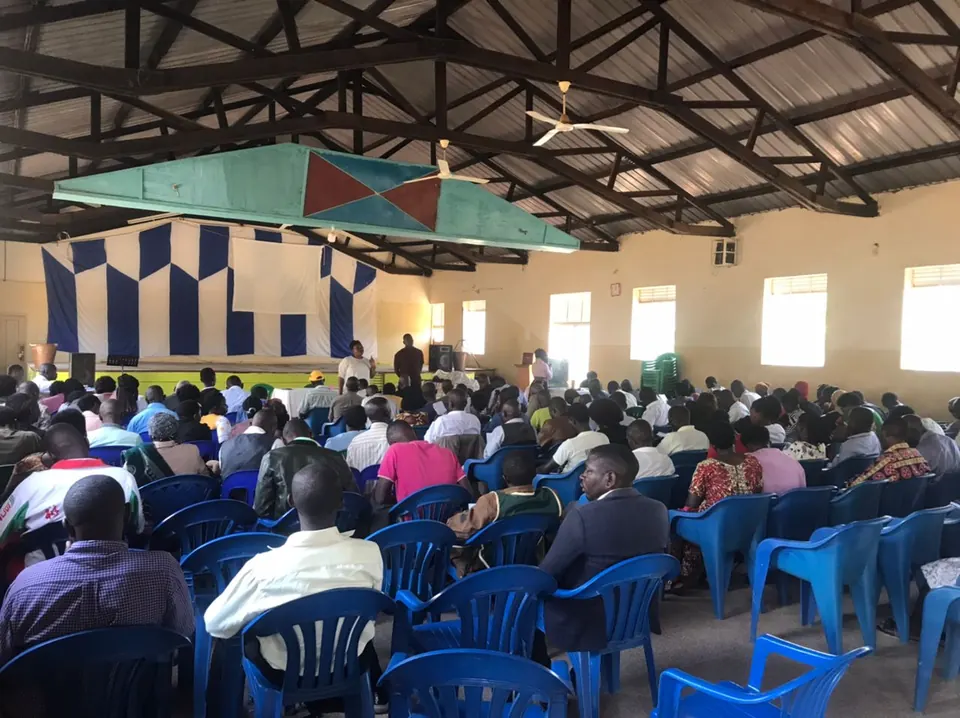

About TOPA
Get to know the people behind the movement
Tooro Organic Producers Association is a farmer-centred organisation pioneering organic agriculture in Western Uganda since 2015.
Our story
Pioneering organic agriculture from Tooro for East Africa
TOPA is a pioneering farmer-led organisation transforming agriculture in Western Uganda and serving East Africa through organic production, climate-smart farming and local processing.
Incorporated in 2022 with Government of Uganda Registration No. 80020003587340, we focus on farmer and community empowerment in essential oils and value-added herbal products. We help rural communities learn climate-smart farming, produce premium organic raw materials, raise household incomes, strengthen nutrition and reach high-value domestic and international markets.
Membership profile of our 1,500-farmer network across 9 districts.


Our vision
To build a resilient network of 10,000 empowered farmers producing world-class organic raw materials for premium essential oils and nutrition products, strengthening Uganda’s health, export competitiveness and inclusive economic growth by 2030.
Our mission
To advance Uganda’s organic and essential-oils value chains by equipping farmers with modern skills, scaling sustainable production, strengthening local value addition and building partnerships that unlock markets while improving community health and livelihoods.
Our journey
From a farmer group to an export-ready organisation
Founded in Tooro
TOPA begins as a farmer-centred movement pioneering organic agriculture in Western Uganda.
Formally incorporated
Registered with the Government of Uganda (Reg. No. 80020003587340) with a focus on essential oils and value-added herbal products.
Scaling training
Farmer trainings in Fort Portal and field days across the Rwenzori region grow the network towards 1,500 members.
First export samples
TOPA product samples ship to buyers in Europe and the Americas, and a training of trainers runs in Kabarole.
Chia for Brain Capital
Launch of our flagship chia initiative and a new market focus on Asia, specifically the United Arab Emirates.
10,000 empowered farmers
Our vision: a resilient network producing world-class organic raw materials.
15,000 chia farmers trained
Our target for chia-led incomes and nutrition across the region.

Leadership
Dr. Willy Businge Araali
Founder, Tooro Organic Producers Association
Dr. Businge founded TOPA to tackle malnutrition, low farmer incomes and market isolation in the Rwenzori region. He built a farmer-led organisation that combines organic production, local processing and market linkages.

Together, we can build Africa’s organic economy.
Farmers, investors, donors, researchers and buyers: there is a place for you in Uganda’s organic transformation, including our new Chia for Brain Capital initiative.